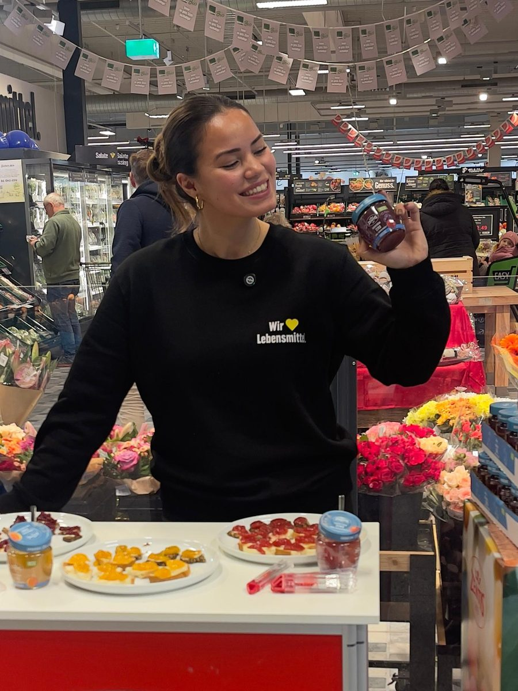

MESMERIZING · Strategie und Umsetzung im Handel
Probieren ist nicht das Ziel. Wiederkauf schon.
Markenaktivierung im Handel — von der Analyse des Kaufmoments bis zur Umsetzung am Point of Sale. Denn Sichtbarkeit im Regal erzeugt noch keine Nachfrage. Entscheidend ist, was nach dem Kontaktmoment im Kopf des Verbrauchers bleibt — und ob er beim nächsten Einkauf wieder zu Ihrer Marke greift.
Potenzial besprechen So arbeite ich
Selbstständig für FMCG- & LEH-Marken · Bundesweite Umsetzung · Persönliche Betreuung · Profil auf LinkedIn
Das eigentliche Problem
Aufmerksamkeit im Handel führt nicht automatisch zu Kaufverhalten.
Viele Marken sind im Handel sichtbar — aber Marke, Produkt und der Moment, in dem tatsächlich entschieden wird, sind nicht ausreichend miteinander verbunden. Der Grund ist selten fehlende Aufmerksamkeit. Es fehlt der Moment, in dem ein Produkt emotional andockt und beim nächsten Einkauf wieder abgerufen wird.
-
Viel Kontakt, wenig Wirkung
Die Aktion läuft, die Zahlen danach bleiben flach.
-
Probieren ohne Erinnerung
Verkostet wird gern. Wiedererkannt wird selten.
-
Starke Marke, schwache Aktivierung
Die Markenvision stimmt, im Regal kommt sie nicht an.
Mein Ansatz
In drei Schritten vom Kontaktmoment zum Wiederkauf.
-
Kaufmoment verstehen
Bevor eine Aktion geplant wird, schaue ich auf Produkt, Zielgruppe und die reale Situation vor Ort. Was entscheidet im Regal tatsächlich — und was nicht?
-
Verbindung schaffen
Ansprache, Story und Aktivierung werden direkt am POS auf diesen Moment ausgerichtet. Nicht lauter, sondern relevanter.
-
Wirkung verlängern
Aus dem einmaligen Kontakt wird Wiedererkennung: durch Kommunikation, die die Aktivierung begleitet und über den Aktionstag hinaus trägt.
„Ich glaube nicht an Lautstärke, sondern an Relevanz im richtigen Moment.“
Leistungen
Wie aus einer Herausforderung im Handel eine wirksame Aktivierung wird.
-
Kaufmoment analysieren
Was hält Ihre Käufer im Markt tatsächlich ab? Marktbesuche, Regalsituation und Verbraucherreaktionen — ausgewertet, nicht behauptet.
-
Aktivierung entwickeln
Aus der Analyse entsteht das Konzept: Ansprache, Botschaft, Kanal und Mechanik — abgestimmt auf Marke, Handel und Einkaufssituation.
-
Im Markt umsetzen
Verkostung, Sampling und Verbraucheransprache am Point of Sale — geplant, gebrieft und begleitet. Inklusive Personal, das ich selbst auswähle.
-
Marktfeedback zurückspielen
Was am Regal passiert, fließt in Ihre nächste Aktivierung und in Ihre Markenarbeit zurück — begleitet von Kommunikation, die über den Aktionszeitraum hinaus trägt.
Konkret umgesetzt als Verkostung, Sampling, Verbraucheransprache am POS, Marktbesuche und aktivierungsbegleitende Kommunikation. Welcher Weg sinnvoll ist, entscheidet der Kaufmoment — nicht der Katalog.

Strategie aus der Praxis
Ich stehe selbst am Stand — deshalb weiß ich, was im Konzept funktioniert.
Aktivierungen plane ich nicht vom Schreibtisch aus. Ich bin vor Ort im Markt, spreche mit den Menschen, die Ihr Produkt in die Hand nehmen, und sehe, was tatsächlich zum Kauf führt — und was nicht.
Beides gehört bei mir zusammen: die Realität des Handels und die Markenperspektive aus dem Marketing. Was am Regal passiert, fließt direkt in die nächste Aktivierung zurück — in Ansprache, Platzierung und Briefing.
Passt das zu Ihnen?
Für Marken, auf die eine dieser Situationen zutrifft.
- Sie haben gerade eine neue Listung bekommen — und merken, dass die Arbeit jetzt erst beginnt.
- Ihr Produkt ist erklärungsbedürftig oder der Wettbewerb im Regal ist hoch.
- Sie möchten Markenbekanntheit in konkrete Kaufimpulse übersetzen.
- Sie launchen ein neues Produkt oder wollen im Handel wachsen.
- Sie möchten Ihre Aktivierungen strategischer aufsetzen und mehr über Ihre tatsächlichen Shopper erfahren.
Branchen
- Lebensmittel & Getränke
- FMCG
- Functional Food
- Health & Lifestyle
- Beauty & Care
- Produktneuheiten
Über mich
Ich kenne Marke, Handel und Verbraucher — jede Seite aus eigener Erfahrung.
Ich habe in der Gastronomie gearbeitet, im Außendienst einer Marketingagentur, im Bereich Social Media und im Handel. Dadurch habe ich den Markt aus sehr unterschiedlichen Blickwinkeln erlebt — aus Sicht des Verbrauchers, aus Sicht des Handels und aus Sicht der Marke.
Heute unterstütze ich FMCG- und LEH-Marken dabei, im Handel relevanter zu werden: Kaufmomente verstehen, Marken erlebbar machen und daraus Wiedererkennung, Nachfrage und Wiederkauf entwickeln.
Wofür ich stehe
- Relevanz statt Lautstärke
- Strategie aus der Praxis
- Echte Verbraucherperspektiven
- Marke, Handel und Aktivierung verbunden
Häufige Fragen
Was Marken mich am häufigsten fragen.
Warum führt Aufmerksamkeit im Handel oft nicht zu Kaufverhalten?
Weil Aufmerksamkeit und Erinnerung zwei verschiedene Dinge sind. Ein Produkt kann gesehen und probiert werden, ohne dass daraus ein Eindruck entsteht, der beim nächsten Einkauf wieder abgerufen wird. Häufig fehlt die Verbindung zwischen Marke, Produkt und dem Moment, in dem tatsächlich entschieden wird. Genau an dieser Lücke setze ich an.
Was unterscheidet Ihren Ansatz von klassischer POS-Promotion?
Klassische Promotion misst den Aktionstag. Ich plane von dem her, was danach bleibt: Wiedererkennung, Nachfrage und Wiederkauf. Das verändert Analyse, Ansprache, Briefing und Begleitkommunikation.
Für welche Marken ist eine Zusammenarbeit sinnvoll?
Für FMCG- und LEH-Marken, die im Handel sichtbar sind, deren Wirkung aber hinter der Sichtbarkeit zurückbleibt — von Lebensmitteln und Getränken über Functional Food bis Health & Lifestyle und Beauty & Care. Die Budgetgröße entscheidet dabei weniger als der richtige Hebel: Gerade bei kleineren und wachsenden Marken zahlt eine präzise geplante Aktivierung überproportional ein.
Kann eine Zusammenarbeit auch strategisch beginnen, ohne dass direkt eine Aktivierung gebucht wird?
Ja. Viele Gespräche starten mit einer Frage, nicht mit einem Auftrag: Warum funktioniert etwas im Handel nicht so, wie es sollte? Wir können mit einer Analyse der Kaufsituation beginnen und erst danach entscheiden, welche Aktivierung sinnvoll ist — oder ob es überhaupt eine braucht.
Kann ich auch nur eine einzelne Verkostung oder Aktivierung umsetzen lassen — inklusive Personal?
Ja. Viele Zusammenarbeiten starten mit einer einzelnen Aktion. Ich plane, briefe und begleite sie so, dass Sie danach mehr über Ihre Käufer wissen als vorher. Das Personal wähle ich selbst aus und briefe es persönlich — bundesweit umsetzbar, unter anderem in Berlin, Hamburg, München, Köln, Düsseldorf, Frankfurt, Hannover und Stuttgart.
Wie wird aus einer Aktivierung verwertbares Marktfeedback?
Indem vorher feststeht, worauf geachtet wird. Reaktionen am Regal, Einwände, Fragen und Kaufabbrüche werden strukturiert festgehalten statt nur gezählt. Was dabei entsteht, fließt in die nächste Aktivierung und in Ihre Markenarbeit zurück.
Woran erkennt man eine erfolgreiche Aktivierung?
Daran, dass Verbraucher emotional andocken, das Produkt später wiedererkennen und Nachfrage entsteht — nicht allein an der Zahl der ausgegebenen Proben.
Wie läuft ein erstes Gespräch ab?
30 Minuten, unverbindlich: Produkt, Zielgruppe und Kaufsituation. Sie müssen dafür noch nicht wissen, welche Leistung Sie brauchen. Im Anschluss erhalten Sie eine erste Einschätzung, wo aus meiner Sicht der Hebel liegt.
Kontakt
Lassen Sie uns über Ihre Potenziale im Markt sprechen.
Unverbindlicher Strategieaustausch — 30 Minuten, konkret, ohne Verkaufsdruck. Sie wissen, dass im Handel etwas besser funktionieren könnte, aber noch nicht genau, welcher Hebel der richtige ist? Genau darüber können wir sprechen.
Nachricht schreiben
Direkt Termin buchen
Beim Laden des Kalenders wird eine Verbindung zu Calendly LLC (USA) hergestellt und Ihre IP-Adresse übertragen. Details in der Datenschutzerklärung.